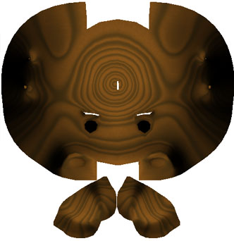

テクスチャの焼き付け タグ
リアルタイム 3D エンジンで再利用可能な陰影やプロシージャルテクスチャをテクスチャマップに焼き込みたいなら、このタグを使用して下さい。使い方は、まずポリゴンオブジェクトを選択し、メニューバーの "レンダー ＞ テクスチャの焼き付け" コマンドを選んで下さい。先ほど選択したポリゴンオブジェクトに "テクスチャの焼き付け" タグが追加されているでしょう。 この状態で "テクスチャの焼き付け" タグに設定することが出来るようになりました。もう一度メニューバーの "レンダー ＞ テクスチャの焼き付け" コマンドを選んで下さい。今度は Cheetah3D がレンダーマネージャで焼き付け用のテクスチャをレンダリングし始めるでしょう。レンダリングが完了すると、その画像の保存が出来ます。
焼き込まれたテクスチャやライトマップは、主にゲーム開発者などによりゲームなどで使用するためのラジオシティマップやプロシージャルマテリアルをテクスチャに焼き込む時に利用されます。

|

|

|
|
1. Pig がRadiosityの設定されたレイトレーシングでレンダリングされました。
|
2. 明るさの情報が書き込まれた木目マテリアルがテクスチャに焼き込まれました。
|
3. 焼き込まれたテクスチャが Pig に適応されました。OpenGL プレビューで木目マテリアルとRadiosityによる陰影付けが確認できます。
|
注意：レンダータグが追加されたポリゴンオブジェクトにのみ使用出来ます。また、これらは編集可能な UV 座標値を持つ唯一のものです。
プロパティ
- UV セット: どのUV セットを焼き付けに使うかを設定します。一般的に UV セット 2 がライトマップの焼き込みに使用されます。
- テクスチャサイズ: 焼き込むテクスチャのサイズを設定します。
- UV 境界のピクセル幅: 焼き付けられたメッシュの形状の境界線を拡張します。これは OpenGL アプリケーションでベイクドテクスチャを使用する場合に、不自然さを軽減する効果があります。
- 背景: ベイクドテクスチャの背景色
- baking UV coords: 選択された UV セット（UV セット プロパティ）で重なり合わない UV 座標を計算します。この展開は完全ではありませんが、始めるのに良い点であるでしょう。
- カラー: テクスチャにカラーライトチャンネルを焼き込みます。
- アンビエント: テクスチャに環境ライトチャンネルを焼き込みます。
- ディフューズ: テクスチャにディフューズライトチャンネルを焼き込みます。
- エミッション: テクスチャにemissionライトチャンネルを焼き込みます。
- バンプ: テクスチャにバンプライトチャンネルを焼き込みます。
- ラジオシティ: テクスチャにRadiosityライトチャンネルを焼き込みます。
- コースティクス: テクスチャにCausticsライトチャンネルを焼き込みます。